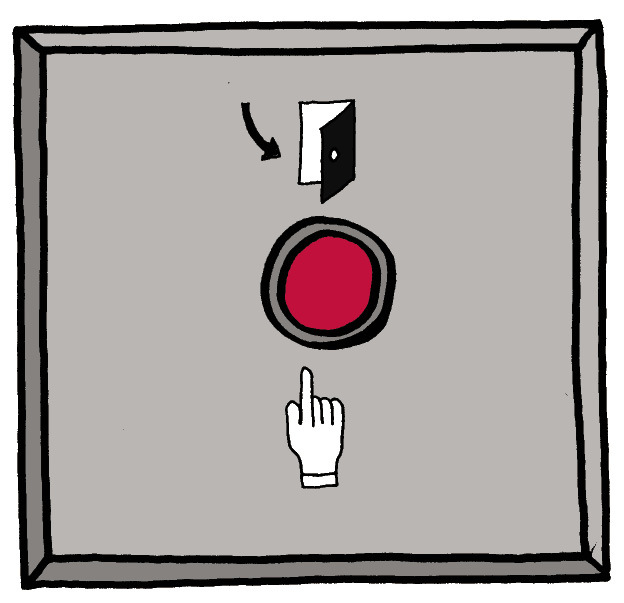

<div class="container">
  <div id="contents" class="col-md-12 main-content"><h1 xmlns="http://www.w3.org/1999/xhtml" id="toc-id-20">Mini-pat elektroniese stelsels en beheer</h1>
    <span xmlns="http://www.w3.org/1999/xhtml">   

  

     </span>  
 <figcaption xmlns="http://www.w3.org/1999/xhtml"> <p class="x--caption para-style-override-1">Figuur 1: Alledaagse toestelle wat elektroniese beheerstroombane gebruik
</p></figcaption><b xmlns="http://www.w3.org/1999/xhtml">elektroniese
stroombane
</b> gebruik om elektriese stroombane met
hoër stroom, te beheer.
<p xmlns="http://www.w3.org/1999/xhtml" class="x--Body-box-no-indent">’n <b>Elektroniese stroombaan
</b> verskil van ’n elektriese
stroombaan omdat dit ’n
baie lae stroom gebruik, en
ook omdat dit elektroniese
beheertoestelle soos ’n
termistor, LAR, diode en
transistor gebruik.
</p>
    <li xmlns="http://www.w3.org/1999/xhtml" class="x--Body-text-bullet">
      <p><b>Algemene stroombrekers:
</b></p> Skakel die stroombaan af (byvoorbeeld, die stroombaan wat al die ligte in ’n
huis van krag voorsien) wanneer die stroom te hoog word (indien die stroom te
hoog is vir die dikte draad wat gebruik is, sal die draad oorverhit).
</li>

      <li xmlns="http://www.w3.org/1999/xhtml" class="x--Body-text-bullet">
      <p><b>Oorblywende-stroombaan stroombrekers:
</b></p> Wanneer daar ’n kraglekkasie bespeur word, skakel dit die hoof
elektrisiteitstoevoer af, byvoorbeeld wanneer ’n persoon aan ’n “draad onder
stroom” raak. Die elektrisiteit word dan deur die persoon se liggaam gelei.
Hierdie toestel moet die stroom vinnig afsny om te verhoed dat die persoon as
gevolg van elektriese skok doodgaan. Daarom sny dit die krag af, selfs al is daar
slegs ’n klein hoeveelheid lekkasie van krag van die elektriese stroom.
</li>
    <p xmlns="http://www.w3.org/1999/xhtml" class="x--Body-Text para-style-override-1"><span></span></p><figcaption xmlns="http://www.w3.org/1999/xhtml"><p><span class="char-style-override-5">Figuur 2: ’n Elektriese verspreidingsbord met stroombrekers
</span></p></figcaption><li xmlns="http://www.w3.org/1999/xhtml" class="x--Body-text-bullet">
      <b>Oonde:
</b> om die temperatuur te beheer.
</li>

      <li xmlns="http://www.w3.org/1999/xhtml" class="x--Body-text-bullet">
      <b>Radio’s en ander musiektoestelle:
</b> om die volume van die luidsprekers te
beheer.
</li>

      <li xmlns="http://www.w3.org/1999/xhtml" class="x--Body-text-bullet">
      <b>Sommige energie-besparing-ligte:
</b> om hulle outomaties af te skakel wanneer
daar genoeg natuurlike lig is.
</li>

      <li xmlns="http://www.w3.org/1999/xhtml" class="x--Body-text-bullet">
      <b>Ketels:
</b> om hulle af te skakel wanneer die water kook.
</li>
    <div xmlns="http://www.w3.org/1999/xhtml" class="frame-7"></div>

      <div xmlns="http://www.w3.org/1999/xhtml" class="frame-7"></div>

      <figcaption xmlns="http://www.w3.org/1999/xhtml">
        <p class="x--caption">Figuur 3: Die beheerknoppie
van ’n stoof is gekoppel aan
’n veranderlike resistor. Dit
beheer die stroom wat deur die
verhittingselement vloei. Hoe
hoër die stroom, hoe warmer sal
die plaat wees.
</p>
      </figcaption>
    <p xmlns="http://www.w3.org/1999/xhtml" class="Normal para-style-override-52"><span></span> </p>
<figcaption xmlns="http://www.w3.org/1999/xhtml">
    <p class="x--caption para-style-override-1">Figuur 4: Die beheerstroombaan wat jy in hoofstuk 5 gebou het vir die brandalarm
</p>
</figcaption><b xmlns="http://www.w3.org/1999/xhtml">Die scenario vir die Mini-PAT
</b><div xmlns="http://www.w3.org/1999/xhtml" class="frame-7"></div>

      <figcaption xmlns="http://www.w3.org/1999/xhtml">
        <p class="x--caption">Figuur 5</p>
      </figcaption>
    <span xmlns="http://www.w3.org/1999/xhtml"> 

       </span>
    <figcaption xmlns="http://www.w3.org/1999/xhtml">

    <p class="x--caption">Figuur 6: ’n Elektriese deurslot
</p>
</figcaption><p xmlns="http://www.w3.org/1999/xhtml" class="Normal para-style-override-21"><span></span> </p>
<figcaption xmlns="http://www.w3.org/1999/xhtml">
    Figuur 7: ’n 3D-werktekening van die onderdele binne ’n elektriese deurslot
</figcaption>
<b xmlns="http://www.w3.org/1999/xhtml">Ontwerpopdrag
</b><b xmlns="http://www.w3.org/1999/xhtml">Spesifikasies
</b><b xmlns="http://www.w3.org/1999/xhtml">Beperkings 
</b><span xmlns="http://www.w3.org/1999/xhtml" class="char-style-override-3"><b>Ontwerpsketse
</b></span> 
    <span xmlns="http://www.w3.org/1999/xhtml" class="char-style-override-3">Week 2</span><p xmlns="http://www.w3.org/1999/xhtml" class="x--Body-box-no-indent"><b>Daar is nie so iets soos ’n
perfekte ontwerp nie!
</b> Jy kan
byvoorbeeld ‘n gekompliseerde
ontwerp maak wat baie goed
sal werk, maar dit sal duur
wees en moeilik wees om te
bou. Of jy kan ’n eenvoudige
ontwerp maak wat werk, maar
wat nie sterk sal wees nie.
</p>
    <b xmlns="http://www.w3.org/1999/xhtml">Leer van die verskillende ontwerpe wat mense gemaak het
</b><li xmlns="http://www.w3.org/1999/xhtml" class="x--Body-text-bullet">
         Eerstens moet jy idees ontwikkel, skets en dan
verduidelik, sonder dat enige iemand iets
negatief oor die idees sê.


        
      </li>

      <li xmlns="http://www.w3.org/1999/xhtml" class="x--Body-text-bullet para-style-override-1">
        
Sodra jy baie idees het om mee te werk, begin
nou dink aan hoe en of die idees wel sal werk.
Moenie praat oor “Mary se ontwerp” en “Sipho
se ontwerp” nie. Praat eerder van “Ontwerp C” en
“Ontwerp B”. Sodra iemand se ontwerp op die
tafel is, praat jy oor die ontwerp en nie oor die
persoon nie. Jy evalueer die ontwerpe; jy evalueer
nie jouself of iemand anders nie.


        
      </li>
    <p xmlns="http://www.w3.org/1999/xhtml" class="x--Body-box-no-indent">Indien enige iemand ’n
negatiewe aanmerking maak,
moet iemand anders sê:
“Rooi vlag! Geen negatiewe
opmerkings in hierdie fase
nie.”
</p>
        <p xmlns="http://www.w3.org/1999/xhtml" class="x--Body-box-no-indent">Indien dinge gesê word soos:
“Mary het so ’n swak ontwerp
gemaak” en “Sipho se ontwerp
is baie beter”, sal dit mense
laat sleg en skaam voel en
ander mense sal trots en selfs
arrogant voel. Indien iemand
sê: “Mary se ontwerp”, moet
iemand anders sê “Rooi vlag!
Ons noem daardie ontwerp,
Ontwerp C.”
</p>
         
 
 
 
<i xmlns="http://www.w3.org/1999/xhtml">Indien jy dit nie gaan doen nie, gaan jy nie volgende week in staat wees om die
model van jou ontwerp te bou nie.
</i><b xmlns="http://www.w3.org/1999/xhtml">prototipe</b> genoem.
.<p xmlns="http://www.w3.org/1999/xhtml" class="x--Body-box-no-indent">Ontwerpers en ingenieurs
maak gewoonlik eers <b>prototipes</b> voordat ’n ontwerp goed genoeg is om dit te
begin vervaardig en verkoop. Elke prototipe probeer om te verbeter op die vorige een.
</p>
    <li xmlns="http://www.w3.org/1999/xhtml" class="x--Body-text-bullet"> Jy het al die materiale gebring wat jy nodig het vir die maak van ’n model van
jou ontwerp.
 </li>

      <li xmlns="http://www.w3.org/1999/xhtml" class="x--Body-text-bullet"> Jy het die model akkuraat en volgens jou ontwerptekeninge gemaak.
</li>

      <li xmlns="http://www.w3.org/1999/xhtml" class="x--Body-text-bullet"> Jy het die elektriese uitsettoestel suksesvol gebou
. </li>

      <li xmlns="http://www.w3.org/1999/xhtml" class="x--Body-text-bullet"> Jy het die model aan ’n eenvoudige stroombaan gekoppel, sonder die
uitsettoestel, en jy het ’n goeie metode van toetsing gevolg.
 </li>

      <li xmlns="http://www.w3.org/1999/xhtml" class="x--Body-text-bullet"> Nadat jy jou model vir die eerste maal getoets het, het jy ’n lys gemaak
van al die moontlik redes oor waarom jou model dalk nie werk nie, of waarom jou model nie te goed werk nie.

</li>

      <li xmlns="http://www.w3.org/1999/xhtml" class="x--Body-text-bullet"> Jy het die lys wat jy hierbo gemaak het, gebruik om jou model reg te
maak of te verbeter.
 </li>

      <li xmlns="http://www.w3.org/1999/xhtml" class="x--Body-text-bullet"> Jy het jou model ten minste nog een maal getoets. Jy het die probleme
neergeskryf en weer die foute reggemaak of die model verbeter totdat
dit goed werk.
 </li>

      <li xmlns="http://www.w3.org/1999/xhtml" class="x--Body-text-bullet"> Jou model werk, of jy het ’n goeie verduideliking geskryf en sketse
gemaak oor wat jy nog moet doen en verander om te verseker dat jou
model sal werk.
 </li>
    <span xmlns="http://www.w3.org/1999/xhtml" class="char-style-override-3">Week 4</span><li xmlns="http://www.w3.org/1999/xhtml" class="x--Body-text-bullet"> Jy was goed voorbereid vir jou aanbieding.
 </li>

      <li xmlns="http://www.w3.org/1999/xhtml" class="x--Body-text-bullet"> Jy het verduidelik hoe jy verbeter het gedurende die ontwerpproses.
</li>

      <li xmlns="http://www.w3.org/1999/xhtml" class="x--Body-text-bullet"> Jy het na jou gehoor gekyk en duidelik gepraat.

 </li>
    <h3 xmlns="http://www.w3.org/1999/xhtml">‘n alternatief vir die ketelskakelaar-projek: ontwerp en bou ‘n stroombaan kontinuïteitstoetse</h3>

     
      <p xmlns="http://www.w3.org/1999/xhtml" class="x--Body-opener">Jou onderwyser mag dalk besluit dat jy die
volgende projek doen in plaas van die
ontwerp en bou van ’n outomatiese
ketelskakelaar.
</p>

      <p xmlns="http://www.w3.org/1999/xhtml" class="x--Body-opener">Heel dikwels wanneer mense drade
moet koppel, is daar soveel drade
dat dit moeilik is om te weet watter
twee draadpunte is deel van
dieselfde draad.
</p>

      <p xmlns="http://www.w3.org/1999/xhtml" class="x--Body-opener">Dit sal handig wees om ’n toestel
te hê wat kan aandui of twee
draadpunte gekoppel is of nie.
Dit is wat die “kontinuïteitstoetser”
doen.
</p>

      <div xmlns="http://www.w3.org/1999/xhtml">
        <div class="frame-7"></div>

        <div class="Basic-Text-Frame">
          <p class="x--caption">Figuur 8</p>
        </div>
     
    </div> 

    
      <p xmlns="http://www.w3.org/1999/xhtml" class="x--Body-opener">’n Kontinuïteitstoetser is eintlik ’n oop stroombaan.
Die stroombaan kan alleenlik gesluit word deur die
twee draadpunte wat jy wil toets. Gebruik die twee
toets leidingsdrade van die kontinuïteitstoetser om
aan die twee draadpunte wat jy wil toets, te raak. Indien
daar ’n baan vir die stroom is om tussen die twee
draadpunte gelei te word, sal dit die stroombaan voltooi en
’n lig of gonser op die kontinuïteitstoetser sal geaktiveer word.
</p>

      <div xmlns="http://www.w3.org/1999/xhtml" class="aside">
        <p class="x--Body-box-heading"><b>Veiligheidswaarskuwing:
</b></p>

        <p class="x--Body-box-no-indent">Skakel eers die kragtoevoer af
voordat jy so ’n toets wil doen.
</p>
      </div>
  

   
      <p xmlns="http://www.w3.org/1999/xhtml" class="x--Body-opener">Neem kennis dat die kontinuïteitstoetser nie
kan aandui of die twee punte wat jy toets deel
van dieselfde draad is nie. Dit kan slegs aandui
of daar ’n baan is vir die stroom om tussen die
twee draadpunte gelei te word, dit dui dus aan
of die twee drade elektries gekoppel is. Indien
jy weet dat daar geen splitsing of koppeling van
drade tussen die twee draadpunte is nie, dan
kan die draadpunte slegs elektries gekoppel
wees indien dit dieselfde draad is.
</p>

      <p xmlns="http://www.w3.org/1999/xhtml" class="x--Body-opener">Wanneer jy die kontinuïteitstoetser as jou projek
gaan doen, moet jy die volgende in ag neem:
</p>

      <ul xmlns="http://www.w3.org/1999/xhtml"><li class="x--Body-opener-bullet">Dit moet maklik wees om die toetsleidingsdrade
van die kontinuïteitstoetser te laat kontak
maak met die draadpunte.</li>

        <li class="x--Body-opener-bullet">  Die toetser moet klein wees.</li>

        <li class="x--Body-opener-bullet"> Die toetser moet beskermd wees teen
skokke, byvoorbeeld wanneer dit laat val
word.</li>

        <li class="x--Body-opener-bullet">Die toetser moet beskermd wees van
water, aangesien water ’n kortsluiting kan
veroorsaak.</li>
      </ul> 

 
      <p xmlns="http://www.w3.org/1999/xhtml" class="x--Body-opener">’n Paar idees vir die bou van die kontinuïteitstoetser word in die foto’s hieronder gewys.
</p>
<figure xmlns="http://www.w3.org/1999/xhtml">
      <p class="x--caption"><span></span> </p>
<figcaption>
      <p class="x--caption">Figuur 9</p>
</figcaption></figure><figure xmlns="http://www.w3.org/1999/xhtml">
      <p class="x--caption"><span></span> </p>
<figcaption>
      <p class="x--caption">Figuur 10</p>
    </figcaption>
  </figure>

  </div>
</div>